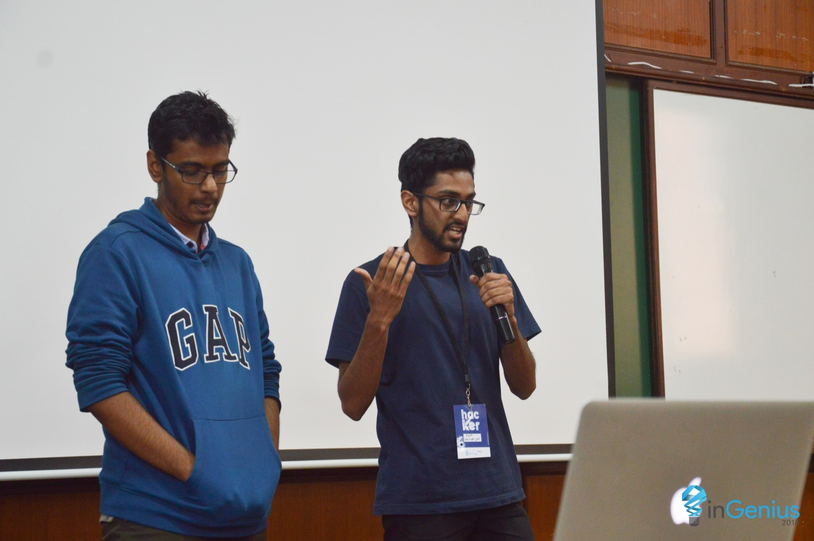
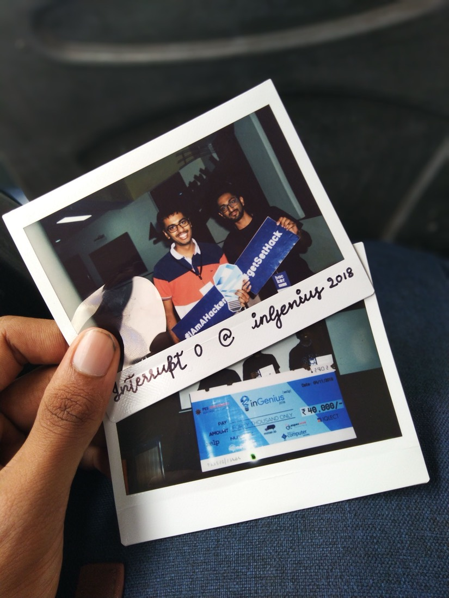
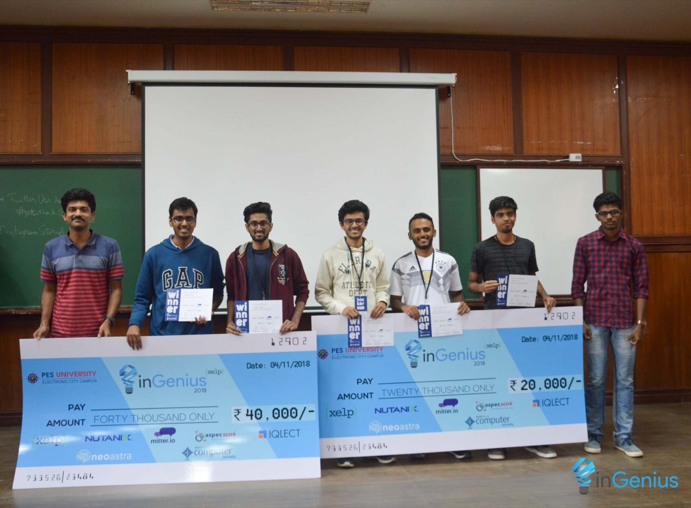
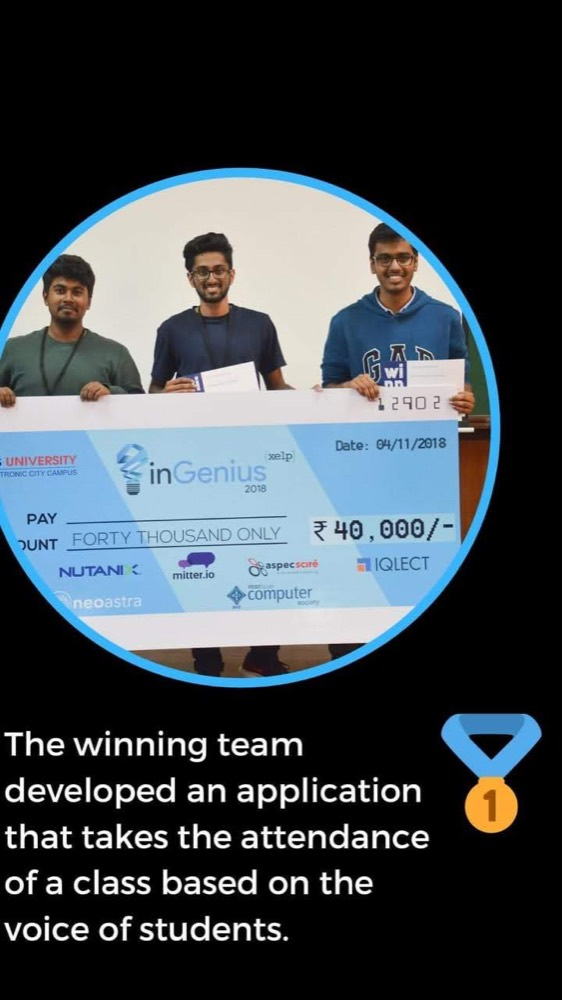
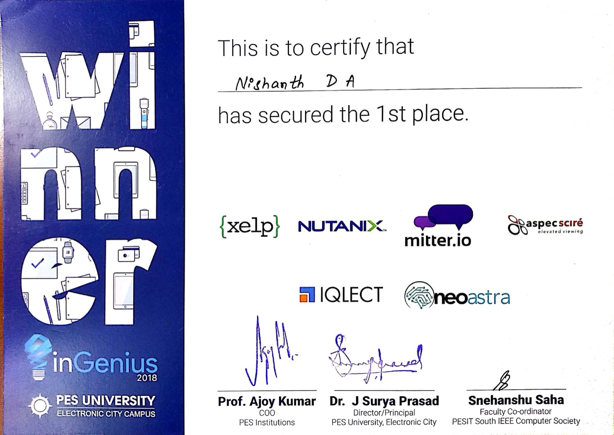

inGenius 2k18 · PES University, Electronic City Campus
Attendance you cannot fake
Speaker recognition tells you who is speaking. It does not tell you they are in the room. Closing that gap was the whole project, and it took one extra word.
inGenius is the flagship hackathon of the PESIT South IEEE Computer Society, and 2k18 was its seventh edition. Twenty-four hours, 3rd and 4th of November, at the PES University Electronic City campus. The theme was Open Hack, which is to say there was no theme. Teams of two or three, around ₹1,00,000 in prizes, about 250 teams submitting ideas and roughly 100 making it through to the hack itself.
Rajat Keshri and I went as a team of two. We were table 63, and we called ourselves Interrupt Zero.

01The problem nobody in the room needed explained
Proxy attendance is the small, universal fraud of Indian engineering college. A lecturer reads out roll numbers, and somebody who is not that person says "present". Everyone knows it happens. Everyone has done it or had it done for them. It is the sort of problem you can pitch to a room of students and judges without a single slide of background.
So: take attendance from voice. Each student says their roll number, the system works out whether the voice belongs to the person that roll number is registered to, and marks them present.
02Speaker recognition is not enough
That design has an obvious hole in it, and the hole is the interesting part of the project.
Speaker recognition answers the question "whose voice is this?". It does not answer "is that person here?". If attendance depends on a voice saying a roll number, then a recording of that voice saying that roll number is just as good. The fraud does not go away. It gets easier, because now it scales: record once, replay every week.
Any authentication system built on something you can capture is really an authentication system for whoever captured it.
What we did about it was small and cheap. The system asks for the roll number, transcribes it with Google's speech-to-text API, and checks it against the register. If it matches, it does not mark you present. It generates a random word, shows it to you, and asks you to say that too.
A recording cannot answer a question it has never heard. The attacker would need the target's voice saying an arbitrary word chosen a second ago, which means they would need the target. That is the whole defence, and it is one extra round trip.
This is a challenge-response scheme, which I did not know at the time. We arrived at it by asking what we would do if we wanted to beat our own demo, which turns out to be a reasonable substitute for knowing the literature.

03Two models, because we could not choose
For the speaker recognition itself we built the thing twice, along two separate paths, and kept both in the repository.
One path used Hidden Markov Models. Enrolment took five voice samples from a new student and trained a per-speaker model; a second script could retrain from samples already on disk without asking the student to come back. Prediction loaded the models and scored a fresh sample against them. Attendance state lived in a CSV, with a script to reset the day's column each morning and another to write the day's results back.
The other path used a convolutional network over a folder-per-speaker dataset layout, with its own training and prediction scripts.
There was no principled reason for two implementations. We were not sure which would work well enough by the deadline, we had two people, and a hackathon is exactly the situation where hedging beats committing. It is a bad habit in production and a good one at 3am with a demo due.
04What we never measured
Nowhere in that repository is there an accuracy figure. Not for the HMM path, not for the CNN path, not for the two together. No confusion matrix, no held-out set, no false-accept rate, which for an authentication system is the number that actually matters.
We knew it worked because we watched it work, on our own voices, in a quiet room, with a handful of enrolled speakers. That is a demo, not an evaluation, and the difference is the thing I would go back and explain to the two people at table 63.
05The result
First place, and ₹40,000. Second place took ₹20,000.

A year later the organisers put the win on their own feed, and described the project in one sentence: "The winning team developed an application that takes the attendance of a class based on the voice of students." That is a fair summary, and it is notably missing the part we were proudest of.


The code is still up, unchanged since 2019, path bugs and all: github.com/nishu88/InGenius-2018-hackathon. The README ends by warning you to fix the hardcoded paths before running anything, which tells you most of what you need to know about how it was written.